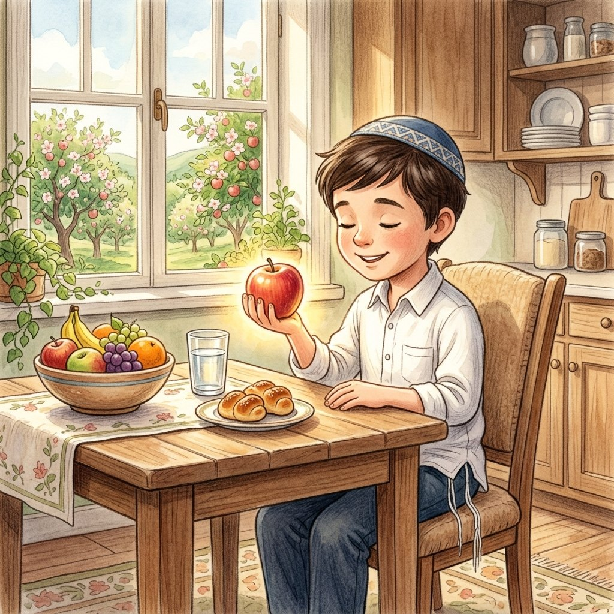

יש לי מושג
למה מברכים?
על הפרק: ידעני "רק טועם" פירור מעוגייה בקונדיטוריה, והרב רואה אותו. למה מברכים לפני שאוכלים, האם מברכים גם על פירור קטן, ואולי אפשר פשוט לברך "שהכל" על הכול?
0:00
--:--
לא הצלחנו לטעון את ההקלטה. בדקו את החיבור לאינטרנט ונסו שוב.